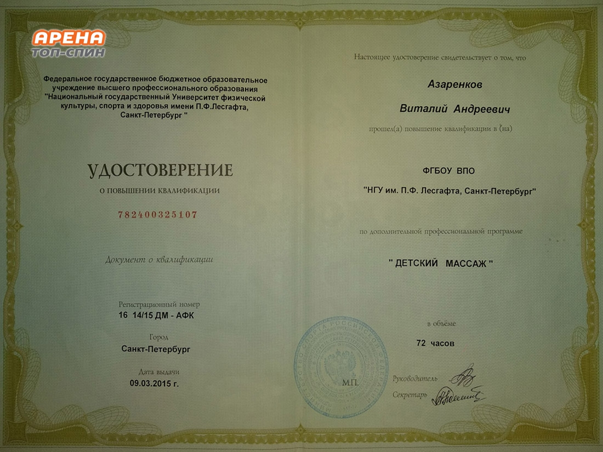
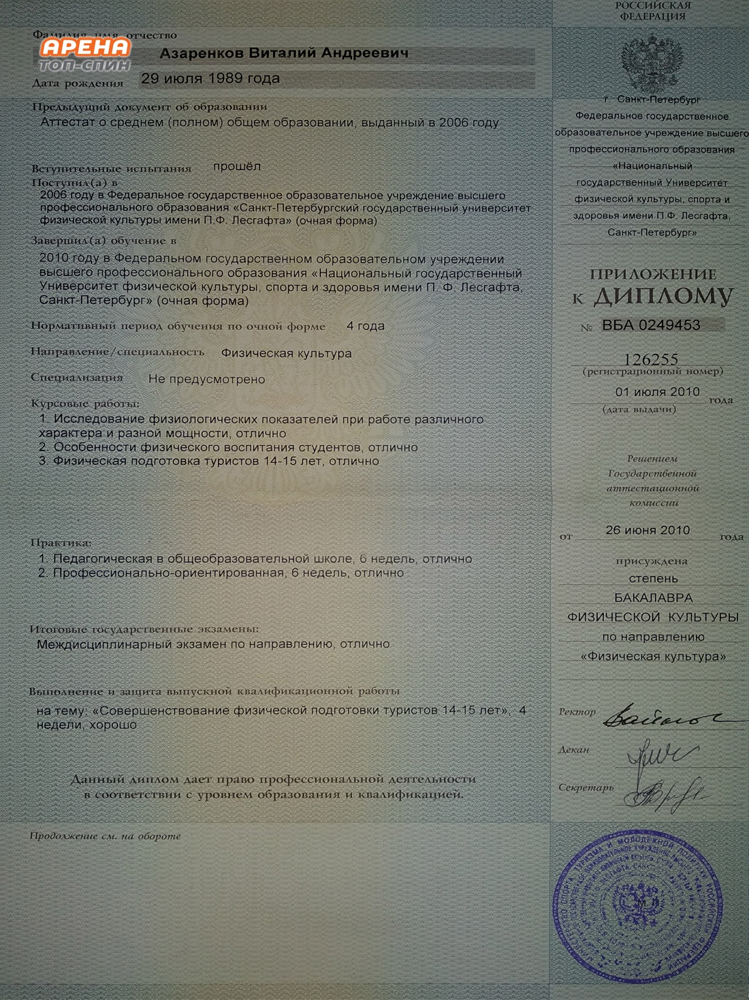
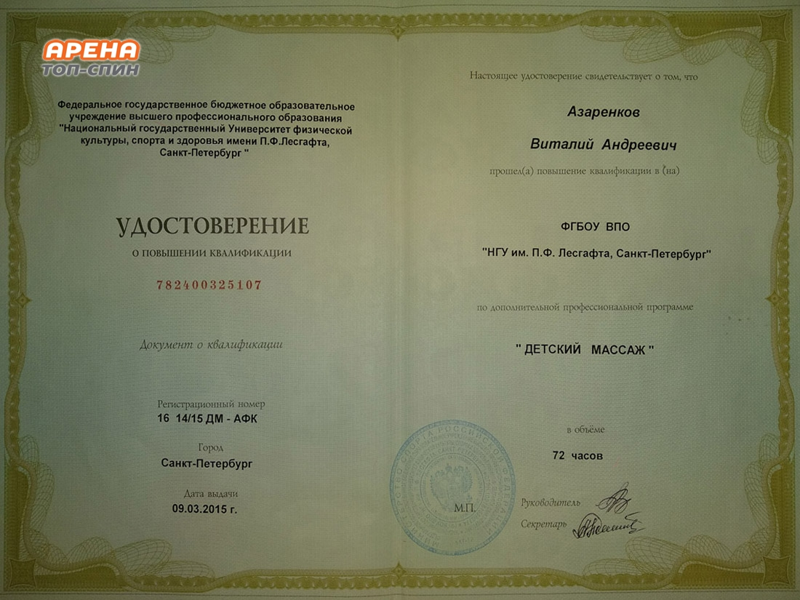
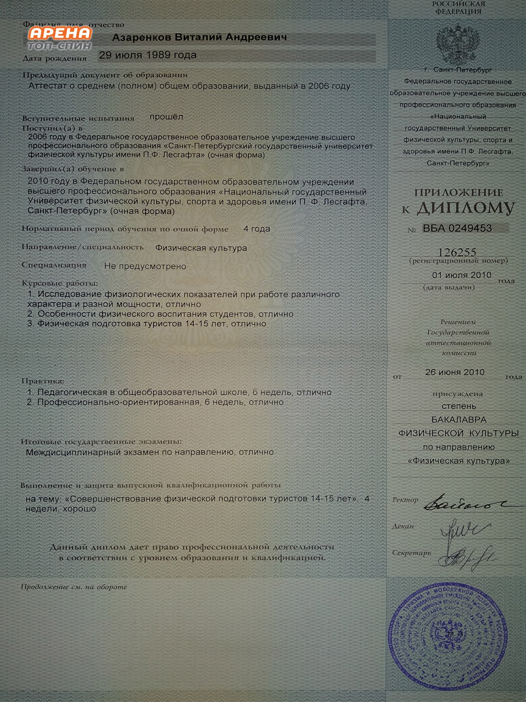

Азаренков Виталий
- Массажист
- Тренер-реабилитолог
- Спортивный массаж
- Детский массаж
- Тайский массаж
- Стаж работы более 13 лет
О себе
В этом 2020 году мне исполнится 31 год из которых 13 лет занимаюсь массажем. Всё началось в 2006 году с поступления, тогда ещё академию им П.Ф. Лесгафта. Мечта связать свою жизнь со спортом давно жила во мне, так как я родился в семье заслуженного тренера и с самого детства твердо решил пойти по его стопам. В 2007 году закончил первый курс университета и уже тогда стало очевидно, что спорт как процесс достижения высоких результатов связан с риском для здоровья, а физкультура наоборот заботиться о сохранении здоровье, как итог я решил скорректировать вектор своего обучения и выбирать учебные дисциплины позволяющие сохранить и приумножить здоровье человека. В этом же 2007 году закончил свои первые курсы классического и точечного массажа. В процессе обучения в университете прошел курс спортивного массажа с элементами мануальной терапии. Закончив в 2012 году кафедру физиологии со степенью магистр педагогических наук устроился работать тренером тренажёрного зала, где выбрал для себя оздоровительное направление, в этом мне очень помогал массаж. Комплексный подход позволял решать сложные вопросы и достигать высоких результатов в кратчайшие сроки. В 2012 прошел курсы тайского массажа на которых обратил внимание на важность растяжки для здоровья человека. В 2015 году закончил курсы детского массажа. В 2018 году после 6 лет успешной работы тренером и массажистом я на время отложил работу тренером для получения медицинского образования, сейчас я студент 2-го курса мед техникума №2 который специализируется на обучении массажу. Впереди ещё 2 года обучения и курсы медицинского массажа. На данный момент позиционирую себя как массажист, тренер-реабилитолог. Буду рад помочь: снять напряжение после тяжёлых тренировок, подготовиться к соревнованиям, устранить боли в спине и суставах, помогу в освоении сложных двигательных действий и в формировании правильной осанки.
Фотографии квалификации
 


